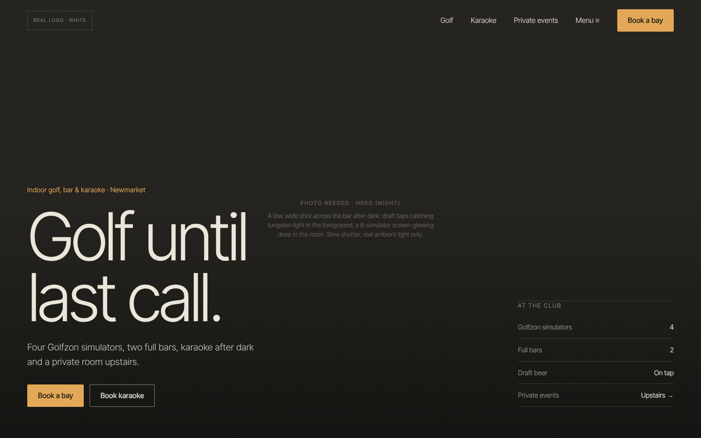
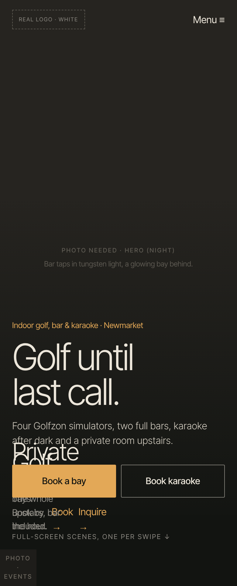

The Bogey Club at 10 pm. A cinematic, low-light brand where golf is the excuse and the night is the product: amber tungsten light, full-bleed scenes, very light type at very large sizes. Closest to a nightlife or boutique bar brand.


Inter Tight at 300 / 400 / 500. Very light display weight, close to Helvetica Now Display. Free (OFL).
Amber is the colour of a draft beer under tungsten light. On near-black it reads as warm and expensive rather than sporty. It is the most atmospheric option.
Night only: tungsten, slow shutter, visible grain, deep shadows, glowing screens and taps.